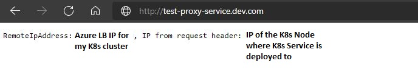

Using Kubernetes Service for proxying to external services
So, recently I've faced a scenario where I got a chance to dig more into different Kubernetes Service types and experiment with those. I would like to share one of the experiments where I tested several Kubernetes Service types to implement proxying of the requests to external services from Kubernetes cluster.
Why would proxying to external services from Kubernetes cluster be relevant?
There may be multiple reasons for why you would look into setting up this kind of proxying to external services from Kubernetes cluster. A few use case examples may be:
- You have a hybrid deployment where some services are running in Kubernetes cluster and some services haven't been migrated yet and are running, for example, on-premises.
- You have services that will always reside outside of the cluster due to specific requirements like, for instance, object storage or database.
- You have a service that is located in another data center than the Kubernetes cluster.
- You're performing a bigger restructuring/refactoring in your Kubernetes cluster and would like to avoid downtime and have an easy way to redirect traffic during migration.
Scenario where this was relevant for me was like this: I have a single-tenant application used by hundreds of customers. Some instances of this application are already hosted in Kubernetes (Azure Kubernetes Service (AKS) in this case) but most of the instances are still hosted on hundreds of Azure VMs which are using only dynamic IPs. A new component that has been added to standard application will be sending requests to an external service's API that is hosted by a third-party. This external API accepts requests coming only from static IPs, i.e. you will need to have a single static IP that the third-party will need to whitelist in order for you to call their APIs. This would work fine for the instances hosted in Kubernetes since we're already using Ingress Controller there with a static public IP that the requests will be sent from but, as you may guess, this wouldn’t work for most of the instances that are still deployed on Azure VMs with dynamic IPs. For those cases there was a need to find other solutions.
When an AKS cluster is created it'll by default create an external Azure Load Balancer and assign it a public IP which is only valid for the lifespan of the LoadBalancer Service. If you need a static IP you need to explicitly create it and assign to your Kubernetes services. If you're also using a public facing Ingress Controller with static external IP, you will need to ensure that you have properly defined the necessary IP addresses in the Azure Load Balancer. You must also verify that you've defined the correct IP rule order in Azure Load Balancer Frontend IP Configuration section. It's important because the first frontend IP from the list will be used by Azure Load Balancer for the egress traffic from the AKS cluster. Official Microsoft documentation describes this pretty well: Egress traffic in AKS.
There are multiple ways to solve the scenario that I've mentioned above:
- Dedicated VM with installed transparent proxy. You could set up a dedicated VM with a static IP and install a transparent proxy solution that would forward all the requests to the respective external service. Disadvantage of that is that you will need someone to maintain that proxy solution in addition to the dedicated VM which must also be secured and protected from, for instance, DDoS attacks.
- Web traffic load balancer (Azure Application Gateway). Another possiblity which works pretty well is to set up a web traffic load balancer like Azure Application Gateway that could be created with a static IP as well. I will not go into details on how to do that but I think that this guide describes pretty well how you could use Azure Application Gateway to redirect web traffic: Tutorial: Redirect web traffic using Azure PowerShell. The disadvantage of this approach is additional cost - in case of Azure Application Gateway, depending on the size of the gateway the price will vary, and the service is charged per hour. Depending on which location the service is deployed to, the price may vary from 22 to almost 300 dollars a month.
It's important to note that if you're setting up Azure Application Gateway, you can't use Redirection rule for the proxy scenario since it will be a pure URL redirection where no intervention with the HTTP request will happen and the request will still be sent from the original client IP. You will need to set up a backend pool pointing to the external service - then, when request hits Azure Application Gateway, it will set up a new session with the backend, assigning the request a new IP which would be equal to the static IP of the gateway, as well as add the source IP of the request as a "X-Forwarded-For" HTTP request header. More information can be found here: How an application gateway routes a request
Since I already had part of the workload running in Kubernetes and the remaining instances were planned to be migrated to Kubernetes in the near future it was clear that the solution I needed to find was temporary. Once all of the instances are migrated to Kubernetes, this problem will be solved automatically. And the cherry on top is that we will need to account only for one static IP address that needs to be whitelisted - the public IP of Azure Load Balancer configured for my AKS cluster! So, why not use the additional capabilities in the existing Kubernetes platform in order to provide this temporary solution for VM-hosted workloads? That's when Kubernetes Service came into picture.
What is Kubernetes Service and what kinds of Kubernetes Service can be created?
Let's briefly clarify what a Kubernetes Service is and what types of Kubernetes Service exist. Kubernetes Service is a an abstraction over a logical set of Pods that your application is running on in Kubernetes. As we know, Pods are temporary and can die at any moment and get replaced with a new set of Pods with new IP addresses, therefore Service is a way to expose your application, as well as define the policy for how application Pods must be accessed. More on this in official Kubernetes documentation: Service.
There are multiple kinds of Kubernetes Service you can create:
- ClusterIP (default): internal Service with assigned internal IP - will only be reachable from inside the Kubernetes cluster.
- NodePort: Service is exposed at static port on each Node's IP and can be reached from outside the cluster by calling [NodeIP]:[NodePort]. Also creates ClusterIP Service automatically.
- LoadBalancer: normally used by cloud providers, Service is exposed and reachable from the outside via cloud provider's load balancer. For example, in case of AKS it will be Azure Load Balancer. Also creates ClusterIP and NodePort Services automatically.
- ExternalName: Service is mapped to a respective CNAME record.
Kubernetes Service can also be created with selectors and without selectors.
- Service with selectors is a classic implementation where a set of Pods are abstracted with a Service, and based on the defined selector the Service will now know which Pods it's handling access for. An example of such selector may be application name but you can define whatever selector you want as long as you remember to define the same selector for the Pods as well as for the Service. When a Service with selector is created a respective Endpoint Object is created automatically - it will handle a list of IPs that the Service will redirect traffic to.
- Service without selectors can be used when you want to expose backend types different from Pods, for instance, an external database, a service in another namespace or an external service in my scenario. When a Service without selector is created, no Endpoint Object is created automatically so you need to create it manually and provide the backend address that the Service must route traffic to. If ExternalName Service is created, no Endpoint Object is needed.
Headless Service is a Service without cluster IP - you can use this Service when you want to use a specific service discovery mechanism that is not the one provided by Kubernetes platform. No load balancing or proxying is done for this Service by Kubernetes and no cluster IP is being allocated for the Service. It can be defined with and without selectors as well and that's what defines how DNS is configured for the headless Service.
Now that we've covered the basics, let's get back to the scenario I've described above and see how we can implement proxying to external services with help of Kubernetes Service without selectors and ExternalName Service.
Implementation description and preparation
I will be using AKS as my Kubernetes cluster. As an external service I'll be using a small app I've created that will check the request it receives and return information about the IP that the request is being sent from, as well as the source IPs the request forwarding is happening for (if there are any). For illustration purposes I've deployed the app to IIS on an Azure VM but it's a cross-platform .NET 5 app that can be easily deployed in other ways as well. This application can also be used to test web traffic load balancer like Azure Application Gateway that I've briefly mentioned above.
If you would like to use it for testing, you can find the code on my GitHub: IPValidator.
Since I'm using a Kubernetes cluster provided by a cloud provider (Azure in this case) I will also create an Ingress to provide access from the outside and route traffic to my Service(s) and an Ingress Controller (NGINX) so that Ingress can work as expected.
Proxy to external services with Service without Selectors
Now we're ready to create and deploy our Service for proxying. There are two Service types we can achieve it with: a default ClusterIP Service without selectors and ExternalName Service that I will demonstrate in the section below.
Let's start with creating a default ClusterIP Service without selectors first:
#service.yaml
apiVersion: v1
kind: Service
metadata:
name: proxy-service
spec:
ports:
- port: 80
protocol: TCP
targetPort: 80As you can see we're not providing any selectors and since we're using default Service type (ClusterIP), we don't need to specify the type either. We only need to specify the Service name and port. I'm using Kubernetes deployment templates but Helm templates can be used here as well if you would like a more generic deployment of these resources. Now, if you remember from the previous section, since we're creating a Service without selectors, no Endpoint is being created for us so we need to create an Endpoint manually and provide IP address of the external service we want to proxy requests to. I will use an IP address of IPValidator app running on an Azure VM (IP address is inactive now and was used only for demonstration purposes :) ):
#endpoint.yaml
apiVersion: v1
kind: Endpoints
metadata:
name: proxy-endpoint
subsets:
- addresses:
- ip: 10.240.0.129 # IP address of your external service that you would like to proxy requests to
ports:
- port: 80Now, let's create an Ingress to enable traffic routing to our Service. I'm using NGINX Ingress therefore it's specified in the annotations but you can definitely use any other Ingress here as well. I'm also not demonstrating TLS configuration here but you can enable that as well.
#ingress.yaml
apiVersion: networking.k8s.io/v1
kind: Ingress
metadata:
annotations:
kubernetes.io/ingress.class: nginx
nginx.ingress.kubernetes.io/rewrite-target: /
name: proxy-ingress
spec:
rules:
- host: test-proxy-service.dev.com
http:
paths:
- backend:
service:
name: proxy-service # Here you specify the name of the Service traffic must be routed to
port:
number: 80
path: /
pathType: ImplementationSpecificAnd it's done! If we now go to http://test-proxy-service.dev.com, it’ll now proxy the request further to my external service's IP which is 10.240.0.129. IPValidator provides us a response saying that initially the client request came from the Node IP where we've deployed our "proxy-service" Service but it was then sent further from the Kubernetes cluster via Azure Load Balancer with a configured static IP of our choice - that's the IP that can be whitelisted by a third-party so that we can access their APIs!

Now, let's see how the same can be achieved with ExternalName Service!
Proxy to external services with ExternalName Service
If you remember from the earlier section, for ExternalName Service we don't need to bother about creating an Endpoint, we just need to specify correct Service type and provide the FQDN of the external service we want to proxy the requests to. So our Service definition will look something like this:
#service.yaml
apiVersion: v1
kind: Service
metadata:
name: proxy-service-externalname
spec:
type: ExternalName
externalName: ipvalidator-test.dev.com # Provide the FQDN of the external service you want to proxy requests toNow, we can create an Ingress - it's pretty much the same as the one we created for default Service without selectors but now we're pointing to the ExternalName Service instead:
#ingress.yaml
apiVersion: networking.k8s.io/v1
kind: Ingress
metadata:
annotations:
kubernetes.io/ingress.class: nginx
nginx.ingress.kubernetes.io/rewrite-target: /
nginx.ingress.kubernetes.io/upstream-vhost: ipvalidator-test.dev.com
name: proxy-ingress
spec:
rules:
- host: test-proxy-service-externalname.dev.com
http:
paths:
- backend:
service:
name: proxy-service-externalname # Here you specify the name of the ExternalName Service traffic must be routed to
port:
number: 80
path: /
pathType: ImplementationSpecificAnd we're all set! If we now go to http://test-proxy-service-externalname.dev.com, our request will be redirected to http://ipvalidator-test.dev.com . In this case the egress traffic from AKS cluster uses respective Azure Load Balancer public static IP, in my case, the same one as in the previous example (external static IP of NGINX Ingress Controller) so that's still the same IP we can let the third-party whitelist in order for us to access their APIs.
Important note: ExternalName Service is supported only by NGINX Plus Ingress Controller, not the free version. You can read more about it here: Support for ExternalName Services
There are some known challenges with ExternalName Service type, also when it comes to common protocols like HTTP and HTTPS. Challenges are related to the Host header discrepancies when it comes to the hostname ExternalName Service references and the actual hostname used by clients inside the cluster. You can read more about the challenges here: Type ExternalName. In order to not preserve the hostname that was initially set in the request you can add "ingress.kubernetes.io/preserve-host: “false”" (valid for Ingress Controller like, f.ex., Traefik) or "nginx.ingress.kubernetes.io/upstream-vhost: [your_external_host]" (NGINX) annotation to your Ingress definition.
Additional resources
Some material that may be relevant to check out for more in-depth understanding of different networking concepts in Kubernetes:
- Explanation of what Ingress Controller is and how it's used in Kubernetes: Ingress Controllers
- Explanation of what Ingress is and how it's used in Kubernetes: Ingress
- Explanation of Service without selectors: Services without selectors
- Explanation of Headless Service: Headless Services
- Explanation of different Service types: Service Types
- Explanation of how to create an Ingress Controller with static public IP in Azure Kubernetes Service (AKS): Create an ingress controller with a static public IP address in Azure Kubernetes Service (AKS)
That's it from me this time, thanks for checking in! If this article was helpful, I'd love to hear about it! You can reach out to me on LinkedIn, GitHub or by using the contact form on this page :)
Stay secure, stay safe.
Till we connect again